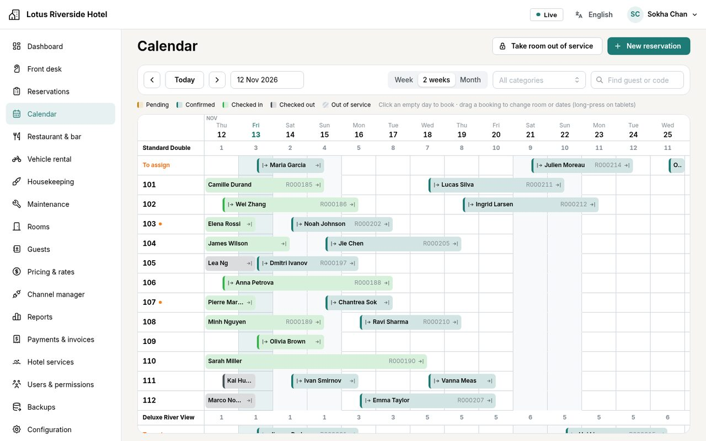

HMS
A hotel management system (PMS). One server and one PostgreSQL database serve every device in the hotel — reception computers on Linux or Windows, Android tablets and iPads — and each screen updates as soon as a colleague changes something. Reservations, front desk, billing, housekeeping, restaurant, vehicle rental and reports, in five languages including Khmer. Built and tested; not yet installed in a real hotel.
Un logiciel de gestion hôtelière (PMS). Un seul serveur et une seule base PostgreSQL servent tous les appareils de l’hôtel — postes de réception sous Linux ou Windows, tablettes Android et iPad — et chaque écran se met à jour dès qu’un collègue modifie quelque chose. Réservations, réception, facturation, ménage, restaurant, location de véhicules et rapports, en cinq langues dont le khmer. Construit et testé ; pas encore installé dans un vrai hôtel.
ប្រព័ន្ធគ្រប់គ្រងសណ្ឋាគារ (PMS)។ server តែមួយ និងមូលដ្ឋានទិន្នន័យ PostgreSQL តែមួយ បម្រើឧបករណ៍ទាំងអស់ក្នុងសណ្ឋាគារ — កុំព្យូទ័របញ្ជរទទួលភ្ញៀវដែលប្រើ Linux ឬ Windows, ថេប្លេត Android និង iPad — ហើយអេក្រង់នីមួយៗធ្វើបច្ចុប្បន្នភាពភ្លាមៗ នៅពេលមិត្តរួមការងារផ្លាស់ប្តូរអ្វីមួយ។ ការកក់ បញ្ជរទទួលភ្ញៀវ វិក្កយបត្រ ការសម្អាតបន្ទប់ ភោជនីយដ្ឋាន ការជួលយានជំនិះ និងរបាយការណ៍ ជា 5 ភាសា រួមទាំងភាសាខ្មែរ។ បានបង្កើត និងធ្វើតេស្តរួចហើយ ប៉ុន្តែមិនទាន់បានដំឡើងនៅក្នុងសណ្ឋាគារពិតប្រាកដនៅឡើយទេ។

One hotel, one source of truth.
A hotel works on many screens at once: the reception computer, the housekeeper’s tablet, the manager’s iPad, the restaurant till. HMS gives them a single server — ideally a small PC inside the hotel — and a single database. No device keeps its own copy. Tablets and iPads open it in the browser, where it installs like an app; Linux and Windows computers get a small desktop application that loads the interface from the hotel server, so every device always runs the same version.
When someone books a room, checks a guest in or marks a room clean, the change is announced the moment it is saved, and every open screen refreshes. If the Internet goes down, the hotel keeps working on its own network; only the outside links — the channel manager, off-site copies of the backups — wait for it to come back. A device that loses the server does not take bookings or payments offline: it shows a banner, keeps what you typed and catches up when the connection returns. Queuing them would bring back the double bookings the whole design exists to prevent.
The rule that matters most — a room cannot be given to two guests on the same night — is enforced by PostgreSQL itself, not by the screen. In the tests, ten simultaneous bookings of one room give exactly one booking; in the load test, 50 simultaneous requests for a category of 3 rooms were accepted exactly 3 times.
The whole hotel, screen by screen.
| Area | What it does |
|---|---|
| Front desk | Today’s arrivals, guests in house and departures, with each stay’s balance and the state of every room. Check-in needs an assigned room (a room not yet clean asks for confirmation); walk-ins, room moves, early departures; check-out once the bill is settled. |
| Reservations | A calendar of rooms by day: click an empty day to book, drag a booking to change room or dates (long-press on a tablet). Multi-room bookings, a live price quote, a warning for duplicate guests, and the full history of every change. |
| Pricing | Rate plans with or without meals, refundable or not, with their cancellation terms; plans derived from others; seasons, weekends, long-stay, last-minute and early-bird discounts; minimum and maximum stay, stop sell. One pricing engine computes every price, and a daily rate calendar edits them in bulk. |
| Billing | The guest folio (nights, extras, taxes, payments), payments in several currencies with the rate kept for each one, invoices and receipts with gapless numbers, PDFs in five languages, and cancellation and no-show fees taken from the policy. |
| Housekeeping and maintenance | The day’s cleaning list, prepared from the bookings; each task goes from started to done to inspected, and the room’s status follows. A repair request can take a room out of service; finishing it sends housekeeping in. |
| Restaurant and bar | Tables, takeaway and room service; a kitchen and bar display with the waiting time; split payments, foreign currencies, charge to the guest’s room; the breakfast list and a sales report. |
| Vehicle rental | Scooters, motorbikes, cars, tuk-tuks, bicycles, boats: hourly bookings, hand-over and return with licence, odometer, fuel and deposit, late fees, and a rental contract in PDF. The database refuses double bookings here too. |
| Channel manager | A connection to SiteMinder (pmsXchange), which passes availability and rates on to Booking.com, Agoda and other sites and sends their bookings back. Only changes are sent; an online booking is never refused — an overbooking is flagged instead. |
| Reports | Occupancy, ADR (average price of a room night), RevPAR (revenue per available room), cancellation and no-show rates, how far ahead guests book; breakdowns by source, room type and rate plan; comparison with the previous period or last year; a forecast 30 to 180 days ahead; CSV exports that open in Excel in every language. |
| Staff and backups | 12 built-in roles (receptionist, housekeeping, accountant, waiter, kitchen…) and custom ones; each person sees only their own menus. Optional two-factor sign-in, a list of sessions, sign-in history and a full audit trail. Automatic backups, each checked by a test restore, and a screen to back up or restore. |
The restaurant and the vehicle rental were added on request; each module stays hidden when the hotel has no outlet or no vehicle. One installation can hold several hotels of the same group, each seeing only its own data.
Correct first.
A room cannot be sold twice
Every stay and every out-of-service period goes into one ledger that PostgreSQL guards with an exclusion constraint: two overlapping stays in the same room are refused, even when written in raw SQL. Bookings by room category take a lock, so the last room is sold once.
Live on every screen
A change is announced only once it is saved (PostgreSQL LISTEN/NOTIFY), and screens reload the data through the normal permission checks. In the load test, 60 connected devices received a change in a median of 47 ms.
Five languages, Khmer included
English, French, Simplified Chinese, Russian and Khmer, chosen by each person and kept on every device. The 2,152 interface texts are checked for completeness in every language, and the PDFs shape Khmer and Chinese correctly. The Khmer wording still awaits a review by a native speaker.
Money stays on the record
Payments and charges cannot be deleted, only voided with a reason; invoice and receipt numbers have no gaps. Only the card brand and last four digits are kept, and a full card number typed into a note is refused.
One interface for every device
The same React interface on desktop, iPad and Android tablet, tested end to end on all three, plus Safari’s engine for the iPad. Desktop installers for Linux (AppImage, DEB) and Windows (installer, portable EXE) are built automatically.
Security checked down to the database
PostgreSQL row-level security on every hotel table, an API connected with a restricted role, and an automated test that calls each of the 226 API operations without a session, without permission and from another hotel. An internal audit fixed 9 findings.
Where it stands.
All ten stages of the plan are built and covered by automated tests: hotel set-up, reservations, the calendar and pricing, front desk and billing, housekeeping and maintenance, multi-user work, the channel manager, reports, the desktop and tablet versions, and a final round of security, backup and load testing. It has not yet been installed in a hotel: the screenshots show a demo hotel, Lotus Riverside Hotel (18 rooms in Phnom Penh), whose guests and bookings are generated.
| State | What |
|---|---|
| Not built yet | Photo and logo upload; recovery codes for two-factor sign-in; a night audit, company accounts and split bills; a card terminal or online payment (card payments are recorded, not processed); PDF and e-mailed reports. |
| Built, not yet verified | The SiteMinder link against SiteMinder’s live test service, and its certification with a pilot hotel; real iPads and Android tablets; the desktop installers on real Linux and Windows computers. |
| Before wider use | An external penetration test (recommended before a server is exposed to the Internet); code signing for the desktop installers. |
Booking.com currently accepts no new connectivity providers, and a direct connection to Agoda requires partner status, so HMS goes through SiteMinder. No connection is reported as working until it has been verified with the provider.
Un hôtel, une seule source de vérité.
Un hôtel travaille sur beaucoup d’écrans à la fois : le poste de la réception, la tablette du ménage, l’iPad du directeur, la caisse du restaurant. HMS leur donne un seul serveur — idéalement un petit PC installé dans l’hôtel — et une seule base de données. Aucun appareil ne garde sa propre copie. Les tablettes et les iPad l’ouvrent dans le navigateur, où elle s’installe comme une application ; les ordinateurs Linux et Windows reçoivent une petite application de bureau qui charge l’interface depuis le serveur de l’hôtel : tous les appareils ont toujours la même version.
Quand quelqu’un réserve une chambre, enregistre l’arrivée d’un client ou déclare une chambre propre, le changement est annoncé dès qu’il est enregistré, et tous les écrans ouverts se mettent à jour. Si Internet tombe, l’hôtel continue de travailler sur son réseau local ; seuls les liens extérieurs — le channel manager, les copies des sauvegardes hors site — attendent son retour. Un appareil qui perd le serveur n’accepte ni réservation ni paiement hors ligne : il affiche un bandeau, garde la saisie en cours et se resynchronise au retour de la connexion. Les mettre en file d’attente ramènerait les doubles réservations que tout le système est conçu pour empêcher.
La règle la plus importante — une chambre ne peut pas être donnée à deux clients la même nuit — est garantie par PostgreSQL lui-même, pas par l’écran. Dans les tests, dix réservations simultanées de la même chambre donnent exactement une réservation ; lors du test de charge, 50 demandes simultanées pour une catégorie de 3 chambres ont été acceptées exactement 3 fois.
Tout l’hôtel, écran par écran.
| Domaine | Ce qu’il fait |
|---|---|
| Réception | Les arrivées du jour, les clients en séjour et les départs, avec le solde de chaque séjour et l’état de chaque chambre. L’arrivée exige une chambre attribuée (une chambre pas encore propre demande confirmation) ; clients de passage, changements de chambre, départs anticipés ; départ une fois la note réglée. |
| Réservations | Un planning des chambres jour par jour : un clic sur un jour libre pour réserver, un glisser-déposer pour changer de chambre ou de dates (appui long sur tablette). Réservations de plusieurs chambres, prix calculé en direct, alerte de client en double, et l’historique complet des modifications. |
| Tarifs | Plans tarifaires avec ou sans repas, remboursables ou non, avec leurs conditions d’annulation ; plans dérivés d’autres plans ; saisons, week-ends, remises long séjour, dernière minute et réservation anticipée ; durée de séjour minimale et maximale, arrêt des ventes. Un seul moteur calcule tous les prix, et un calendrier des tarifs les modifie en masse. |
| Facturation | Le compte du client (nuits, extras, taxes, paiements), des paiements en plusieurs devises avec le taux conservé pour chacun, des factures et des reçus à numérotation continue, des PDF en cinq langues, et les frais d’annulation et de non-présentation tirés des conditions. |
| Ménage et maintenance | La liste de ménage du jour, préparée à partir des réservations ; chaque tâche passe de commencée à faite puis contrôlée, et l’état de la chambre suit. Une demande de réparation peut mettre une chambre hors service ; la terminer envoie le ménage. |
| Restaurant et bar | Tables, vente à emporter et service en chambre ; un écran cuisine et bar avec le temps d’attente ; paiements fractionnés, devises étrangères, imputation sur la chambre du client ; la liste des petits-déjeuners et un rapport des ventes. |
| Location de véhicules | Scooters, motos, voitures, tuk-tuks, vélos, bateaux : réservations à l’heure, remise et retour avec permis, compteur, carburant et caution, frais de retard, et contrat de location en PDF. Là aussi, la base refuse les doubles réservations. |
| Channel manager | Une connexion à SiteMinder (pmsXchange), qui transmet disponibilités et tarifs à Booking.com, Agoda et d’autres sites, et renvoie leurs réservations. Seuls les changements sont envoyés ; une réservation en ligne n’est jamais refusée — un surbooking est signalé à la place. |
| Rapports | Taux d’occupation, ADR (prix moyen d’une nuitée), RevPAR (revenu par chambre disponible), taux d’annulation et de non-présentation, délai de réservation ; répartitions par source, type de chambre et plan tarifaire ; comparaison avec la période précédente ou l’an dernier ; prévisions de 30 à 180 jours ; exports CSV lisibles par Excel dans chaque langue. |
| Personnel et sauvegardes | 12 rôles intégrés (réceptionniste, ménage, comptable, serveur, cuisine…) et des rôles sur mesure ; chacun ne voit que ses propres menus. Double authentification facultative, liste des sessions, historique des connexions et journal d’audit complet. Sauvegardes automatiques, chacune vérifiée par une restauration d’essai, et un écran pour sauvegarder ou restaurer. |
Le restaurant et la location de véhicules ont été ajoutés à la demande ; chaque module reste masqué quand l’hôtel n’a ni point de vente ni véhicule. Une même installation peut accueillir plusieurs hôtels d’un groupe, chacun ne voyant que ses propres données.
La justesse d’abord.
Une chambre ne se vend pas deux fois
Chaque séjour et chaque période hors service s’inscrivent dans un même registre que PostgreSQL protège par une contrainte d’exclusion : deux séjours qui se chevauchent dans la même chambre sont refusés, même écrits en SQL direct. Les réservations par catégorie prennent un verrou : la dernière chambre n’est vendue qu’une fois.
En direct sur chaque écran
Un changement n’est annoncé qu’une fois enregistré (LISTEN/NOTIFY de PostgreSQL), et les écrans rechargent les données en repassant par les contrôles de droits habituels. Lors du test de charge, 60 appareils connectés ont reçu un changement en 47 ms (médiane).
Cinq langues, dont le khmer
Anglais, français, chinois simplifié, russe et khmer, choisis par chaque personne et conservés sur tous ses appareils. Les 2 152 textes de l’interface sont vérifiés dans chaque langue, et les PDF composent correctement le khmer et le chinois. La formulation khmère attend encore la relecture d’un locuteur natif.
L’argent reste dans les comptes
Paiements et prestations ne peuvent pas être supprimés, seulement annulés avec un motif ; les numéros de factures et de reçus se suivent sans trou. Seuls la marque de la carte et ses quatre derniers chiffres sont conservés, et un numéro de carte complet tapé dans une note est refusé.
Une interface pour tous les appareils
La même interface React sur ordinateur, iPad et tablette Android, testée de bout en bout sur les trois, plus le moteur de Safari pour l’iPad. Les installateurs pour Linux (AppImage, DEB) et Windows (installateur, EXE portable) sont produits automatiquement.
Une sécurité vérifiée jusque dans la base
Sécurité au niveau des lignes de PostgreSQL sur chaque table d’hôtel, une API connectée avec un rôle restreint, et un test automatique qui appelle chacune des 226 opérations de l’API sans session, sans droit et depuis un autre hôtel. Un audit interne a corrigé 9 problèmes.
Où en est le projet.
Les dix étapes du plan sont construites et couvertes par des tests automatiques : configuration de l’hôtel, réservations, planning et tarifs, réception et facturation, ménage et maintenance, travail à plusieurs, channel manager, rapports, versions bureau et tablette, et une dernière série de tests de sécurité, de sauvegarde et de charge. Il n’a pas encore été installé dans un hôtel : les captures montrent un hôtel de démonstration, le Lotus Riverside Hotel (18 chambres à Phnom Penh), dont les clients et les réservations sont générés.
| État | Quoi |
|---|---|
| Pas encore construit | Envoi de photos et du logo ; codes de secours pour la double authentification ; audit de nuit, comptes entreprises et notes partagées ; terminal de paiement ou paiement en ligne (les paiements par carte sont enregistrés, pas traités) ; rapports en PDF ou par e-mail. |
| Construit, pas encore vérifié | La connexion SiteMinder face à son vrai service de test, et sa certification avec un hôtel pilote ; de vrais iPad et tablettes Android ; les installateurs sur de vrais ordinateurs Linux et Windows. |
| Avant un usage plus large | Un test d’intrusion externe (recommandé avant d’exposer un serveur à Internet) ; la signature des installateurs de l’application de bureau. |
Booking.com n’accepte actuellement aucun nouveau fournisseur de connectivité, et la connexion directe à Agoda exige le statut de partenaire : HMS passe donc par SiteMinder. Aucune connexion n’est annoncée comme fonctionnelle avant d’avoir été vérifiée avec le fournisseur.
សណ្ឋាគារមួយ ប្រភពទិន្នន័យតែមួយ។
សណ្ឋាគារមួយធ្វើការលើអេក្រង់ជាច្រើនក្នុងពេលតែមួយ៖ កុំព្យូទ័រនៅបញ្ជរទទួលភ្ញៀវ ថេប្លេតរបស់បុគ្គលិកសម្អាតបន្ទប់ iPad របស់អ្នកគ្រប់គ្រង និងម៉ាស៊ីនគិតលុយនៅភោជនីយដ្ឋាន។ HMS ផ្តល់ឱ្យពួកវានូវ server តែមួយ — ល្អបំផុតគឺកុំព្យូទ័រតូចមួយដាក់នៅក្នុងសណ្ឋាគារ — និងមូលដ្ឋានទិន្នន័យតែមួយ។ គ្មានឧបករណ៍ណាមួយរក្សាទុកច្បាប់ចម្លងផ្ទាល់ខ្លួនទេ។ ថេប្លេត និង iPad បើកវានៅក្នុង browser ដែលវាអាចដំឡើងដូចកម្មវិធីមួយ ចំណែកកុំព្យូទ័រ Linux និង Windows មានកម្មវិធី desktop តូចមួយ ដែលផ្ទុកផ្ទាំងប្រើប្រាស់ពី server របស់សណ្ឋាគារ ដូច្នេះឧបករណ៍ទាំងអស់តែងតែប្រើកំណែដូចគ្នា។
នៅពេលនរណាម្នាក់កក់បន្ទប់ ចុះឈ្មោះភ្ញៀវចូលស្នាក់នៅ ឬកំណត់ថាបន្ទប់ស្អាតរួចហើយ ការផ្លាស់ប្តូរនោះត្រូវបានប្រកាសភ្លាមៗនៅពេលវាត្រូវបានរក្សាទុក ហើយអេក្រង់ទាំងអស់ដែលកំពុងបើកនឹងធ្វើបច្ចុប្បន្នភាពដោយខ្លួនឯង។ ប្រសិនបើអ៊ីនធឺណិតដាច់ សណ្ឋាគារនៅតែបន្តធ្វើការលើបណ្តាញក្នុងស្រុករបស់ខ្លួន មានតែការតភ្ជាប់ទៅខាងក្រៅប៉ុណ្ណោះ — channel manager និងការចម្លងឯកសារបម្រុងទុកទៅទីតាំងផ្សេង — ដែលរង់ចាំរហូតដល់អ៊ីនធឺណិតមកវិញ។ ឧបករណ៍ដែលដាច់ពី server មិនទទួលយកការកក់ ឬការបង់ប្រាក់ក្រៅបណ្តាញទេ៖ វាបង្ហាញផ្ទាំងជូនដំណឹង រក្សាទុកអ្វីដែលអ្នកបានវាយបញ្ចូល ហើយធ្វើសមកាលកម្មឡើងវិញនៅពេលការតភ្ជាប់ត្រឡប់មកវិញ។ ការទុកវាក្នុងជួររង់ចាំ នឹងនាំមកវិញនូវការកក់ជាន់គ្នា ដែលប្រព័ន្ធទាំងមូលត្រូវបានរចនាឡើងដើម្បីការពារ។
ច្បាប់សំខាន់បំផុត — បន្ទប់មួយមិនអាចផ្តល់ឱ្យភ្ញៀវពីរនាក់ក្នុងយប់តែមួយបានទេ — ត្រូវបានធានាដោយ PostgreSQL ផ្ទាល់ មិនមែនដោយអេក្រង់ទេ។ ក្នុងការធ្វើតេស្ត ការកក់ក្នុងពេលតែមួយចំនួន 10 សម្រាប់បន្ទប់តែមួយ ផ្តល់លទ្ធផលជាការកក់តែមួយគត់ ហើយក្នុងការធ្វើតេស្តបន្ទុក (load test) សំណើក្នុងពេលតែមួយចំនួន 50 សម្រាប់ប្រភេទបន្ទប់ដែលមាន 3 បន្ទប់ ត្រូវបានទទួលយកតែ 3 ប៉ុណ្ណោះ។
សណ្ឋាគារទាំងមូល មួយអេក្រង់ម្តងៗ។
| ផ្នែក | អ្វីដែលវាធ្វើ |
|---|---|
| បញ្ជរទទួលភ្ញៀវ | ភ្ញៀវមកដល់ថ្ងៃនេះ ភ្ញៀវកំពុងស្នាក់នៅ និងភ្ញៀវចាកចេញ ជាមួយសមតុល្យប្រាក់នៃការស្នាក់នៅនីមួយៗ និងស្ថានភាពនៃបន្ទប់នីមួយៗ។ ការចុះឈ្មោះចូលស្នាក់នៅតម្រូវឱ្យមានបន្ទប់ដែលបានកំណត់រួច (បន្ទប់ដែលមិនទាន់ស្អាត ត្រូវការការបញ្ជាក់) ភ្ញៀវដើរចូល ការប្តូរបន្ទប់ ការចាកចេញមុនកំណត់ និងការចាកចេញនៅពេលវិក្កយបត្របានទូទាត់រួច។ |
| ការកក់ | ប្រតិទិនបន្ទប់តាមថ្ងៃ៖ ចុចលើថ្ងៃទំនេរដើម្បីកក់ អូសការកក់ដើម្បីប្តូរបន្ទប់ ឬកាលបរិច្ឆេទ (ចុចឱ្យយូរនៅលើថេប្លេត)។ ការកក់ច្រើនបន្ទប់ ការគណនាតម្លៃភ្លាមៗ ការព្រមានពីភ្ញៀវស្ទួន និងប្រវត្តិពេញលេញនៃរាល់ការផ្លាស់ប្តូរ។ |
| តម្លៃ និងអត្រាតម្លៃ | គម្រោងតម្លៃរួម ឬមិនរួមអាហារ អាចសងប្រាក់វិញ ឬមិនអាចសងវិញ ជាមួយលក្ខខណ្ឌលុបចោលរបស់វា គម្រោងតម្លៃដែលទាញចេញពីគម្រោងផ្សេង រដូវកាល ចុងសប្តាហ៍ ការបញ្ចុះតម្លៃសម្រាប់ការស្នាក់នៅយូរ ការកក់នាទីចុងក្រោយ និងការកក់ទុកមុន ចំនួនយប់អប្បបរមា និងអតិបរមា និងការបិទលក់។ ម៉ាស៊ីនគណនាតម្លៃតែមួយគណនាតម្លៃទាំងអស់ ហើយប្រតិទិនតម្លៃប្រចាំថ្ងៃអាចកែតម្លៃជាច្រើនក្នុងពេលតែមួយ។ |
| វិក្កយបត្រ | តារាងគណនីភ្ញៀវ (folio៖ យប់ស្នាក់នៅ សេវាបន្ថែម ពន្ធ ការបង់ប្រាក់) ការបង់ប្រាក់ជារូបិយប័ណ្ណច្រើន ដោយរក្សាទុកអត្រាប្តូរប្រាក់សម្រាប់ការបង់នីមួយៗ វិក្កយបត្រ និងបង្កាន់ដៃដែលមានលេខរៀងបន្តគ្នាដោយគ្មានចន្លោះ ឯកសារ PDF ជា 5 ភាសា និងថ្លៃលុបចោល ឬថ្លៃមិនមកស្នាក់នៅ (no-show) តាមលក្ខខណ្ឌ។ |
| ការសម្អាតបន្ទប់ និងការជួសជុល | បញ្ជីការងារសម្អាតប្រចាំថ្ងៃ ដែលរៀបចំចេញពីការកក់ ភារកិច្ចនីមួយៗឆ្លងពី “ចាប់ផ្តើម” ទៅ “រួចរាល់” ហើយ “ត្រួតពិនិត្យ” ហើយស្ថានភាពបន្ទប់ប្រែប្រួលតាម។ សំណើជួសជុលអាចដកបន្ទប់ចេញពីដំណើរការ ហើយនៅពេលជួសជុលរួច ប្រព័ន្ធបញ្ជូនការងារសម្អាតទៅបន្ទប់នោះ។ |
| ភោជនីយដ្ឋាន និងបារ | តុ ការខ្ចប់យកទៅ និងសេវាកម្មក្នុងបន្ទប់ អេក្រង់សម្រាប់ផ្ទះបាយ និងបារ ដែលបង្ហាញរយៈពេលរង់ចាំ ការបែងចែកការបង់ប្រាក់ រូបិយប័ណ្ណបរទេស ការគិតចូលបន្ទប់ភ្ញៀវ បញ្ជីអាហារពេលព្រឹក និងរបាយការណ៍លក់។ |
| ការជួលយានជំនិះ | ម៉ូតូស្កូទ័រ ម៉ូតូ ឡាន តុកតុក កង់ ទូក៖ ការកក់តាមម៉ោង ការប្រគល់ និងការទទួលយានវិញ ជាមួយប័ណ្ណបើកបរ លេខគីឡូម៉ែត្រ សាំង និងប្រាក់កក់ ថ្លៃប្រគល់យឺត និងកិច្ចសន្យាជួលជា PDF។ មូលដ្ឋានទិន្នន័យក៏បដិសេធការកក់ជាន់គ្នានៅទីនេះដែរ។ |
| Channel manager | ការតភ្ជាប់ទៅ SiteMinder (pmsXchange) ដែលបញ្ជូនបន្ទប់ទំនេរ និងតម្លៃទៅ Booking.com, Agoda និងគេហទំព័រផ្សេងទៀត ហើយបញ្ជូនការកក់ពីទីនោះត្រឡប់មកវិញ។ មានតែការផ្លាស់ប្តូរប៉ុណ្ណោះដែលត្រូវបានផ្ញើ ការកក់តាមអនឡាញមិនដែលត្រូវបានបដិសេធទេ — ផ្ទុយទៅវិញ ការកក់លើសចំនួន (overbooking) ត្រូវបានដាក់សញ្ញាសម្គាល់។ |
| របាយការណ៍ | អត្រាស្នាក់នៅ ADR (តម្លៃមធ្យមក្នុងមួយយប់) RevPAR (ចំណូលក្នុងមួយបន្ទប់ដែលអាចលក់បាន) អត្រាលុបចោល និងអត្រា no-show រយៈពេលដែលភ្ញៀវកក់ទុកមុន ការបែងចែកតាមប្រភព ប្រភេទបន្ទប់ និងគម្រោងតម្លៃ ការប្រៀបធៀបជាមួយរយៈពេលមុន ឬឆ្នាំមុន ការព្យាករណ៍ពី 30 ទៅ 180 ថ្ងៃខាងមុខ និងការនាំចេញ CSV ដែល Excel អានបានគ្រប់ភាសា។ |
| បុគ្គលិក និងការបម្រុងទុក | តួនាទីស្រាប់ 12 (អ្នកទទួលភ្ញៀវ បុគ្គលិកសម្អាតបន្ទប់ គណនេយ្យករ អ្នករត់តុ ផ្ទះបាយ…) និងតួនាទីដែលបង្កើតតាមតម្រូវការ ម្នាក់ៗឃើញតែម៉ឺនុយរបស់ខ្លួន។ ការផ្ទៀងផ្ទាត់ពីរជាន់ (2FA) ដោយស្ម័គ្រចិត្ត បញ្ជី session ប្រវត្តិការចូលប្រើ និងកំណត់ត្រា audit ពេញលេញ។ ការបម្រុងទុកដោយស្វ័យប្រវត្តិ ដែលនីមួយៗត្រូវបានពិនិត្យដោយការស្តារសាកល្បង និងអេក្រង់សម្រាប់បម្រុងទុក ឬស្តារទិន្នន័យ។ |
ភោជនីយដ្ឋាន និងការជួលយានជំនិះត្រូវបានបន្ថែមតាមការស្នើសុំ ហើយម៉ូឌុលនីមួយៗត្រូវបានលាក់ នៅពេលសណ្ឋាគារមិនមានភោជនីយដ្ឋាន ឬយានជំនិះ។ ការដំឡើងតែមួយអាចផ្ទុកសណ្ឋាគារច្រើននៃក្រុមហ៊ុនតែមួយ ដោយសណ្ឋាគារនីមួយៗឃើញតែទិន្នន័យរបស់ខ្លួន។
ភាពត្រឹមត្រូវមុនគេ។
បន្ទប់មួយមិនអាចលក់ពីរដងបានទេ
ការស្នាក់នៅនីមួយៗ និងរយៈពេលដែលបន្ទប់ឈប់ដំណើរការ ត្រូវបានកត់ត្រាក្នុងបញ្ជីតែមួយ ដែល PostgreSQL ការពារដោយ exclusion constraint៖ ការស្នាក់នៅពីរដែលជាន់គ្នាក្នុងបន្ទប់តែមួយត្រូវបានបដិសេធ ទោះបីសរសេរដោយ SQL ផ្ទាល់ក៏ដោយ។ ការកក់តាមប្រភេទបន្ទប់ប្រើ lock ដូច្នេះបន្ទប់ចុងក្រោយត្រូវបានលក់តែម្តងប៉ុណ្ណោះ។
ផ្ទាល់នៅលើគ្រប់អេក្រង់
ការផ្លាស់ប្តូរត្រូវបានប្រកាសតែបន្ទាប់ពីវាត្រូវបានរក្សាទុកប៉ុណ្ណោះ (LISTEN/NOTIFY របស់ PostgreSQL) ហើយអេក្រង់ផ្ទុកទិន្នន័យឡើងវិញ ដោយឆ្លងកាត់ការពិនិត្យសិទ្ធិធម្មតា។ ក្នុងការធ្វើតេស្តបន្ទុក ឧបករណ៍ 60 ដែលកំពុងតភ្ជាប់ បានទទួលការផ្លាស់ប្តូរក្នុងរយៈពេលមធ្យម 47 ms។
5 ភាសា រួមទាំងភាសាខ្មែរ
អង់គ្លេស បារាំង ចិនអក្សរកាត់ រុស្ស៊ី និងខ្មែរ ដែលម្នាក់ៗជ្រើសរើសដោយខ្លួនឯង ហើយភាសានោះតាមពួកគេទៅគ្រប់ឧបករណ៍។ អត្ថបទទាំង 2,152 នៃផ្ទាំងប្រើប្រាស់ត្រូវបានពិនិត្យថាគ្រប់គ្រាន់ក្នុងភាសានីមួយៗ ហើយឯកសារ PDF បង្ហាញអក្សរខ្មែរ និងចិនបានត្រឹមត្រូវ។ ពាក្យពេចន៍ភាសាខ្មែរនៅតែរង់ចាំការពិនិត្យដោយអ្នកនិយាយភាសាខ្មែរពីកំណើត។
ប្រាក់នៅតែមានក្នុងកំណត់ត្រា
ការបង់ប្រាក់ និងការគិតថ្លៃមិនអាចលុបបានទេ អាចត្រឹមតែលុបចោល (void) ដោយមានមូលហេតុ ហើយលេខវិក្កយបត្រ និងបង្កាន់ដៃបន្តគ្នាដោយគ្មានចន្លោះ។ មានតែម៉ាកកាត និងលេខ 4 ខ្ទង់ចុងក្រោយប៉ុណ្ណោះដែលត្រូវបានរក្សាទុក ហើយលេខកាតពេញដែលវាយចូលក្នុងកំណត់ចំណាំត្រូវបានបដិសេធ។
ផ្ទាំងប្រើប្រាស់តែមួយសម្រាប់គ្រប់ឧបករណ៍
ផ្ទាំងប្រើប្រាស់ React ដូចគ្នានៅលើកុំព្យូទ័រ iPad និងថេប្លេត Android ដែលបានធ្វើតេស្ត end-to-end លើទាំងបី បូកនឹង engine របស់ Safari សម្រាប់ iPad។ កម្មវិធីដំឡើងសម្រាប់ Linux (AppImage, DEB) និង Windows (installer, EXE ចល័ត) ត្រូវបានបង្កើតដោយស្វ័យប្រវត្តិ។
សុវត្ថិភាពដែលពិនិត្យរហូតដល់មូលដ្ឋានទិន្នន័យ
row-level security របស់ PostgreSQL លើគ្រប់តារាងរបស់សណ្ឋាគារ API ដែលតភ្ជាប់ដោយតួនាទីមានសិទ្ធិកំណត់ និងការធ្វើតេស្តស្វ័យប្រវត្តិដែលហៅប្រតិបត្តិការ API នីមួយៗក្នុងចំណោម 226 ដោយគ្មាន session គ្មានសិទ្ធិ និងពីសណ្ឋាគារផ្សេង។ សវនកម្មផ្ទៃក្នុងបានកែបញ្ហាចំនួន 9។
គម្រោងស្ថិតនៅត្រឹមណា។
ដំណាក់កាលទាំង 10 នៃផែនការត្រូវបានបង្កើតរួច និងមានការធ្វើតេស្តស្វ័យប្រវត្តិគ្របដណ្តប់៖ ការកំណត់សណ្ឋាគារ ការកក់ ប្រតិទិន និងតម្លៃ បញ្ជរទទួលភ្ញៀវ និងវិក្កយបត្រ ការសម្អាតបន្ទប់ និងការជួសជុល ការធ្វើការជាមួយគ្នាច្រើននាក់ channel manager របាយការណ៍ កំណែសម្រាប់កុំព្យូទ័រ និងថេប្លេត និងការធ្វើតេស្តចុងក្រោយលើសុវត្ថិភាព ការបម្រុងទុក និងបន្ទុក។ វាមិនទាន់ត្រូវបានដំឡើងនៅក្នុងសណ្ឋាគារណាមួយនៅឡើយទេ៖ រូបថតអេក្រង់បង្ហាញសណ្ឋាគារសាកល្បង Lotus Riverside Hotel (18 បន្ទប់ នៅភ្នំពេញ) ដែលភ្ញៀវ និងការកក់ទាំងអស់ត្រូវបានបង្កើតដោយកម្មវិធី។
| ស្ថានភាព | អ្វីខ្លះ |
|---|---|
| មិនទាន់បានបង្កើត | ការផ្ទុករូបថត និងឡូហ្គោ លេខកូដសង្គ្រោះសម្រាប់ 2FA ការត្រួតពិនិត្យពេលយប់ (night audit) គណនីក្រុមហ៊ុន និងការបំបែកវិក្កយបត្រ ម៉ាស៊ីនឆូតកាត ឬការបង់ប្រាក់អនឡាញ (ការបង់ដោយកាតត្រូវបានកត់ត្រា ប៉ុន្តែមិនត្រូវបានដំណើរការទេ) និងរបាយការណ៍ជា PDF ឬផ្ញើតាមអ៊ីមែល។ |
| បានបង្កើត តែមិនទាន់ផ្ទៀងផ្ទាត់ | ការតភ្ជាប់ SiteMinder ជាមួយសេវាសាកល្បងពិតរបស់វា និងការទទួលស្គាល់ (certification) ជាមួយសណ្ឋាគារសាកល្បង iPad និងថេប្លេត Android ពិតៗ និងកម្មវិធីដំឡើងលើកុំព្យូទ័រ Linux និង Windows ពិតៗ។ |
| មុនការប្រើប្រាស់ទូលំទូលាយ | ការធ្វើតេស្តជ្រៀតចូល (penetration test) ពីខាងក្រៅ (ណែនាំឱ្យធ្វើ មុនពេលបើក server ទៅកាន់អ៊ីនធឺណិត) និងការចុះហត្ថលេខាឌីជីថល (code signing) លើកម្មវិធីដំឡើង។ |
បច្ចុប្បន្ន Booking.com មិនទទួលអ្នកផ្តល់ការតភ្ជាប់ថ្មីទេ ហើយការតភ្ជាប់ផ្ទាល់ជាមួយ Agoda តម្រូវឱ្យមានឋានៈជាដៃគូ ដូច្នេះ HMS តភ្ជាប់តាមរយៈ SiteMinder។ គ្មានការតភ្ជាប់ណាមួយត្រូវបានប្រកាសថាដំណើរការទេ រហូតដល់វាត្រូវបានផ្ទៀងផ្ទាត់ជាមួយអ្នកផ្តល់សេវា។
A tour of the demo hotel.Visite de l’hôtel de démonstration.សណ្ឋាគារសាកល្បង តាមរយៈរូបភាព។
How it is built.
| Backend | Python 3.12, FastAPI, SQLAlchemy 2 (async) and Alembic. A modular monolith: each module — reservations, pricing, billing, restaurant… — owns its own rules, and the others call it rather than touching its tables. 226 API operations. |
| Database | PostgreSQL 17 does three jobs: the records, the job queue and the live-update channel, so there is no Redis or message broker to look after. Exclusion constraints, fuzzy guest search (pg_trgm) and row-level security. |
| Frontend | React 19, TypeScript, Mantine 8, TanStack Query, i18next. The fonts are served by the hotel server, so nothing depends on the Internet. |
| Desktop | A thin Tauri 2 shell: a connection screen, then the hotel’s interface loaded from the server. Invoices open in their own window; PDFs are saved and opened. |
| Invoices, receipts, restaurant bills and rental contracts, made with WeasyPrint, whose HarfBuzz text shaping handles Khmer. | |
| Deployment | Docker Compose: Caddy (HTTPS, with its own certificate authority on a local network), the API, PostgreSQL, migrations and a backup service. Minimum: 2 CPU cores, 4 GB of RAM, 40 GB SSD. |
| Tests | 163 backend tests on a real PostgreSQL database, run with the API’s restricted role; 38 interface unit tests; Playwright end-to-end tests on desktop, iPad and Android tablet; a translation check — all in CI. A restore drill and a load test run on a copy of the production stack: 30 staff working for 5 minutes, 6,621 requests, no errors. |
| Docs | Architecture, an installation and operations guide, the definition of every report figure, the security audit, the QA report, and sourced research on how to connect to Booking.com and Agoda. |
Comment c’est construit.
| Backend | Python 3.12, FastAPI, SQLAlchemy 2 (asynchrone) et Alembic. Un monolithe modulaire : chaque module — réservations, tarifs, facturation, restaurant… — détient ses propres règles, et les autres l’appellent au lieu de toucher à ses tables. 226 opérations d’API. |
| Base de données | PostgreSQL 17 assure trois rôles : les données, la file des tâches et le canal des mises à jour en direct ; il n’y a donc ni Redis ni courtier de messages à entretenir. Contraintes d’exclusion, recherche approximative des clients (pg_trgm) et sécurité au niveau des lignes. |
| Frontend | React 19, TypeScript, Mantine 8, TanStack Query, i18next. Les polices sont servies par le serveur de l’hôtel : rien ne dépend d’Internet. |
| Bureau | Une coque Tauri 2 légère : un écran de connexion, puis l’interface de l’hôtel chargée depuis le serveur. Les factures s’ouvrent dans leur propre fenêtre ; les PDF sont enregistrés et ouverts. |
| Factures, reçus, notes de restaurant et contrats de location, produits par WeasyPrint, dont la mise en forme du texte par HarfBuzz gère le khmer. | |
| Déploiement | Docker Compose : Caddy (HTTPS, avec sa propre autorité de certification sur un réseau local), l’API, PostgreSQL, les migrations et un service de sauvegarde. Minimum : 2 cœurs, 4 Go de mémoire, 40 Go de SSD. |
| Tests | 163 tests du backend sur une vraie base PostgreSQL, exécutés avec le rôle restreint de l’API ; 38 tests unitaires de l’interface ; des tests de bout en bout Playwright sur ordinateur, iPad et tablette Android ; une vérification des traductions — le tout en intégration continue. Un exercice de restauration et un test de charge tournent sur une copie de l’installation de production : 30 employés pendant 5 minutes, 6 621 requêtes, aucune erreur. |
| Docs | Architecture, guide d’installation et d’exploitation, définition de chaque chiffre des rapports, audit de sécurité, rapport de recette, et une recherche sourcée sur les moyens de se connecter à Booking.com et Agoda. |
របៀបដែលវាត្រូវបានបង្កើត។
| Backend | Python 3.12, FastAPI, SQLAlchemy 2 (async) និង Alembic។ ជា modular monolith៖ ម៉ូឌុលនីមួយៗ — ការកក់ តម្លៃ វិក្កយបត្រ ភោជនីយដ្ឋាន… — កាន់កាប់ច្បាប់ផ្ទាល់ខ្លួន ហើយម៉ូឌុលផ្សេងទៀតហៅវា ជាជាងប៉ះពាល់តារាងរបស់វាដោយផ្ទាល់។ ប្រតិបត្តិការ API ចំនួន 226។ |
| មូលដ្ឋានទិន្នន័យ | PostgreSQL 17 ធ្វើការងារបី៖ កំណត់ត្រាទិន្នន័យ ជួរការងារ (job queue) និងបណ្តាញធ្វើបច្ចុប្បន្នភាពផ្ទាល់ ដូច្នេះមិនចាំបាច់មាន Redis ឬ message broker ដែលត្រូវថែទាំទេ។ exclusion constraints ការស្វែងរកភ្ញៀវដោយប្រហាក់ប្រហែល (pg_trgm) និង row-level security។ |
| Frontend | React 19, TypeScript, Mantine 8, TanStack Query, i18next។ ពុម្ពអក្សរត្រូវបានផ្តល់ដោយ server របស់សណ្ឋាគារ ដូច្នេះគ្មានអ្វីពឹងផ្អែកលើអ៊ីនធឺណិតទេ។ |
| Desktop | សំបក Tauri 2 ស្តើងមួយ៖ អេក្រង់តភ្ជាប់ បន្ទាប់មកផ្ទាំងប្រើប្រាស់របស់សណ្ឋាគារដែលផ្ទុកពី server។ វិក្កយបត្របើកក្នុងវីនដូផ្ទាល់ខ្លួន ហើយឯកសារ PDF ត្រូវបានរក្សាទុក និងបើក។ |
| វិក្កយបត្រ បង្កាន់ដៃ វិក្កយបត្រភោជនីយដ្ឋាន និងកិច្ចសន្យាជួល ដែលបង្កើតដោយ WeasyPrint ដែលការរៀបចំអក្សរដោយ HarfBuzz បង្ហាញអក្សរខ្មែរបានត្រឹមត្រូវ។ | |
| ការដំឡើង | Docker Compose៖ Caddy (HTTPS ជាមួយអាជ្ញាធរវិញ្ញាបនបត្រផ្ទាល់ខ្លួននៅលើបណ្តាញក្នុងស្រុក) API, PostgreSQL, migrations និងសេវាបម្រុងទុក។ អប្បបរមា៖ CPU 2 cores, RAM 4 GB, SSD 40 GB។ |
| ការធ្វើតេស្ត | ការធ្វើតេស្ត backend ចំនួន 163 លើមូលដ្ឋានទិន្នន័យ PostgreSQL ពិត ដោយប្រើតួនាទីមានសិទ្ធិកំណត់របស់ API ការធ្វើតេស្ត unit ចំនួន 38 សម្រាប់ផ្ទាំងប្រើប្រាស់ ការធ្វើតេស្ត end-to-end ដោយ Playwright លើកុំព្យូទ័រ iPad និងថេប្លេត Android និងការពិនិត្យការបកប្រែ — ទាំងអស់នេះដំណើរការក្នុង CI។ ការសាកល្បងស្តារទិន្នន័យ និងការធ្វើតេស្តបន្ទុក ដំណើរការលើច្បាប់ចម្លងនៃ production stack៖ បុគ្គលិក 30 នាក់ធ្វើការរយៈពេល 5 នាទី សំណើ 6,621 ដោយគ្មានកំហុសសោះ។ |
| ឯកសារ | ស្ថាបត្យកម្ម មគ្គុទ្ទេសក៍ដំឡើង និងប្រតិបត្តិការ និយមន័យនៃតួលេខនីមួយៗក្នុងរបាយការណ៍ សវនកម្មសុវត្ថិភាព របាយការណ៍ QA និងការស្រាវជ្រាវដែលមានប្រភពច្បាស់លាស់ អំពីរបៀបតភ្ជាប់ទៅ Booking.com និង Agoda។ |